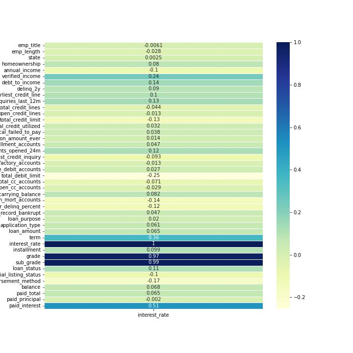
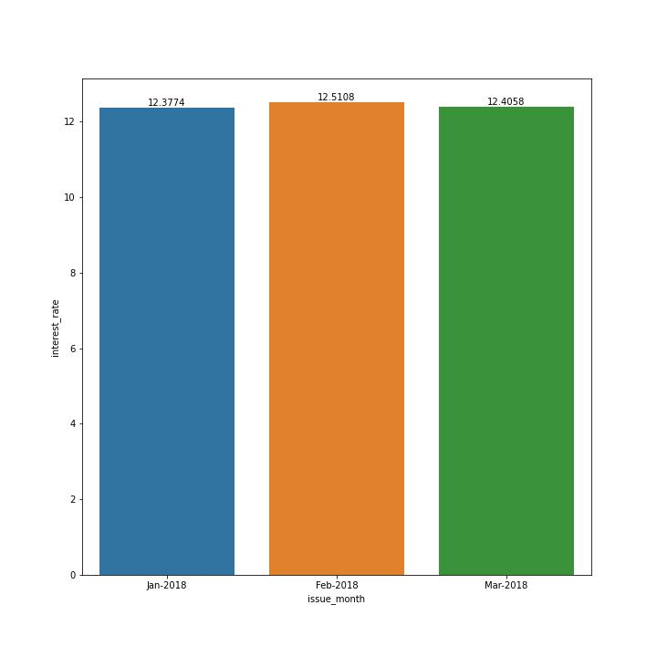
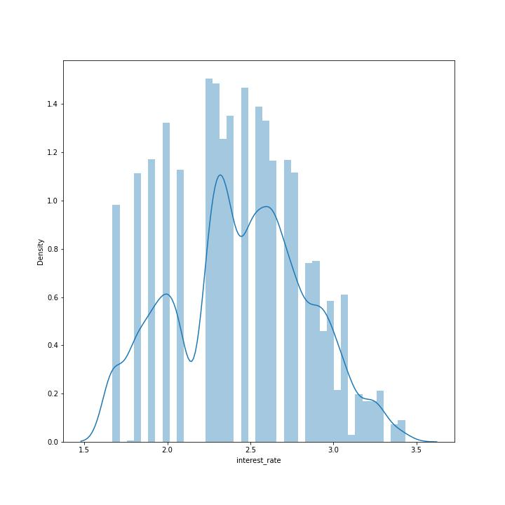
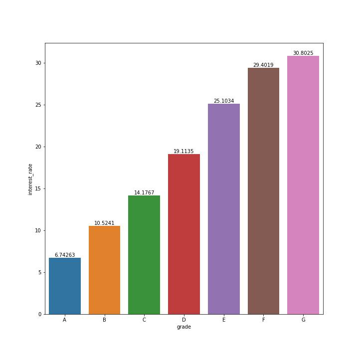
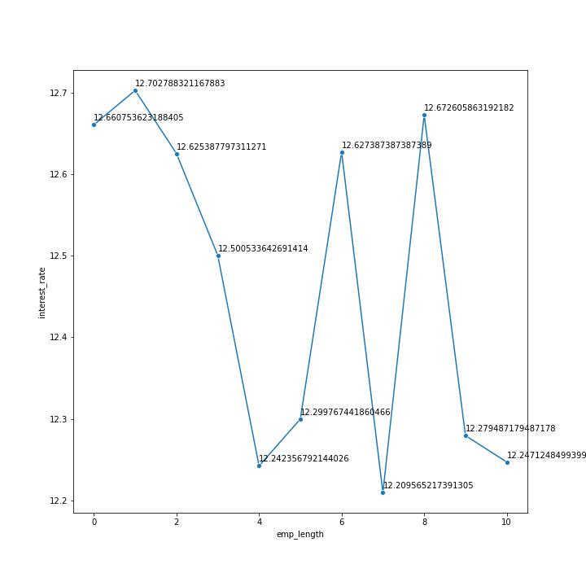

Case Study 1 for Stout
This Dataset is for Lending Club. This Dataset consists of 10000 observations for 55 Columns.
View the DatasetThis Dataset is for Lending Club. This Dataset consists of 10000 observations for 55 Columns.
View the DatasetThe Visualizations for this data set is as:




